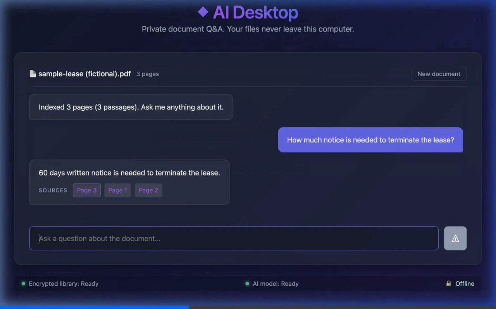

The AI runs on your machine
A bundled llama.cpp server runs the model on your CPU. Your documents and questions never leave the computer. No cloud API, no telemetry, no account.
Drop in a confidential PDF, ask a question in plain English, and get an answer with the page it came from. The AI runs on your computer. Nothing is uploaded, and there's no account.

Unedited screen recording of v0.1.1 with a fictional sample lease (sped up). The model is Qwen2.5-1.5B-Instruct running locally.
A bundled llama.cpp server runs the model on your CPU. Your documents and questions never leave the computer. No cloud API, no telemetry, no account.
Extracted text and the search index live in a SQLCipher 4 database (AES-256, per-page HMAC). The key is kept in your OS keychain (or a private 0600 key file if there's no keychain), never inside the database.
Every answer lists the pages it used. Click one to read the exact passage, so you can check the answer instead of trusting it.
wget https://github.com/anantsaksena/ai-desktop-spike/releases/download/v0.1.1/ai-desktop-spike_0.1.1_amd64.deb
sudo apt install ./ai-desktop-spike_0.1.1_amd64.debwget https://github.com/anantsaksena/ai-desktop-spike/releases/download/v0.1.1/ai-desktop-spike_0.1.1_amd64.AppImage
chmod +x ai-desktop-spike_0.1.1_amd64.AppImage
./ai-desktop-spike_0.1.1_amd64.AppImagex86-64 with AVX2 (most PCs from 2015 on), 4 GB RAM. Verify downloads against SHA256SUMS. AUR, Snap and Flatpak packages are planned. macOS and Windows will follow.